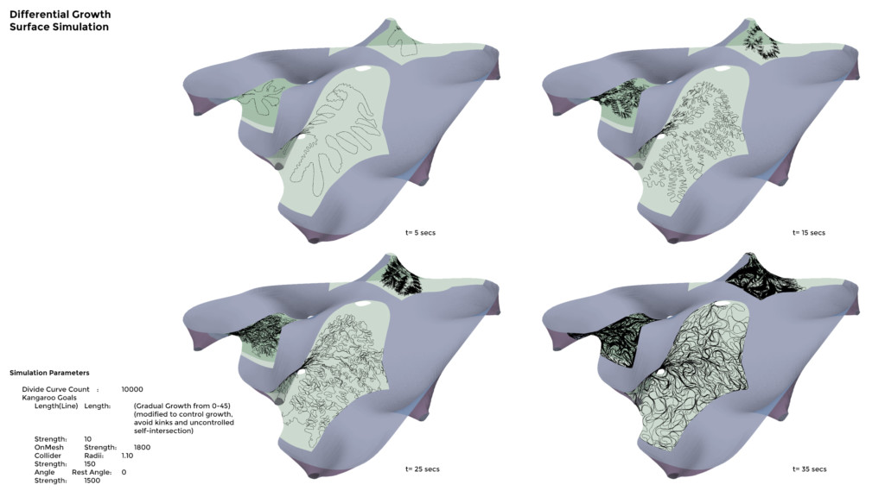
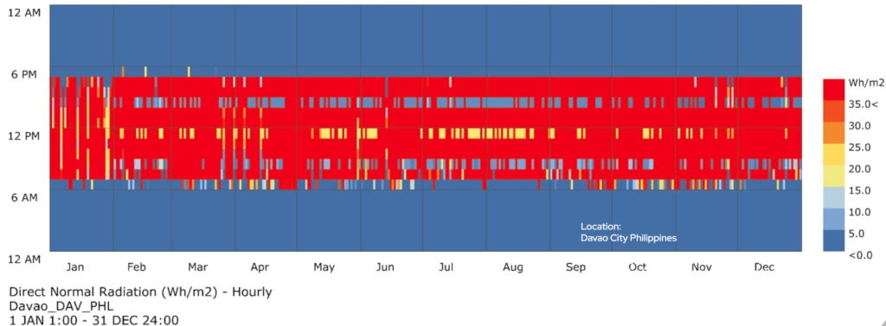
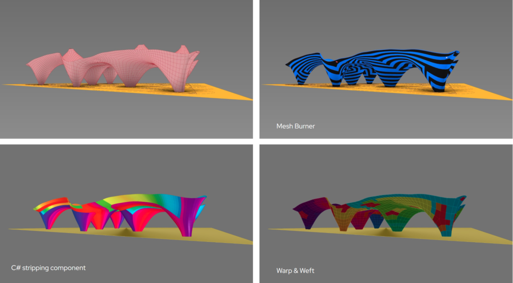

Charge Pavilion
Charge Pavilion combines minimal surfaces and differential growth to generate a continuous, environmentally responsive pavilion in Davao City.
Minimal-surface form finding establishes the roof-column geometry, while environmental optimisation, structural analysis and a differential-growth shading layer respond to a hot tropical climate.
Continuous equilibrium geometry
A minimal surface attempts to minimise area within its boundary conditions. In the computational workflow, mesh topology, anchor points and relaxation goals produce a continuous geometry in which roof and column conditions merge.
Height, radiation and shade
Galapagos evolutionary optimisation was used to study structural height in relation to reducing solar radiation and increasing shaded area. It is not described as AI optimisation.






Credits
- Team
- Naitik Sharma, Neil John Bersabe
- Faculty
- Rodrigo Aguirre
- Assistant
- Hesham Shawqy
- Media
- Official project documentation — IAAC